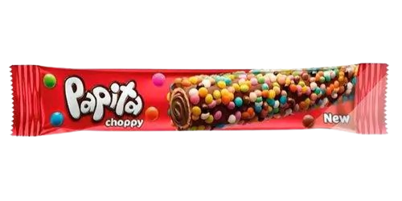

Papita Choppy - pa·pi·ta·t͡ʃɔː·pi
[Zelf. nw.] Een griekse chocolade reep. - "Ik heb nog drie Papita Choppy's liggen in de koelkast."
[Uitspraak] Een mysterieuze uitspraak die weinig mensen zullen begrijpen. - "Ken je Choppy?" / "Ken je Papita?" / "Ken je Papita Choppy?"
